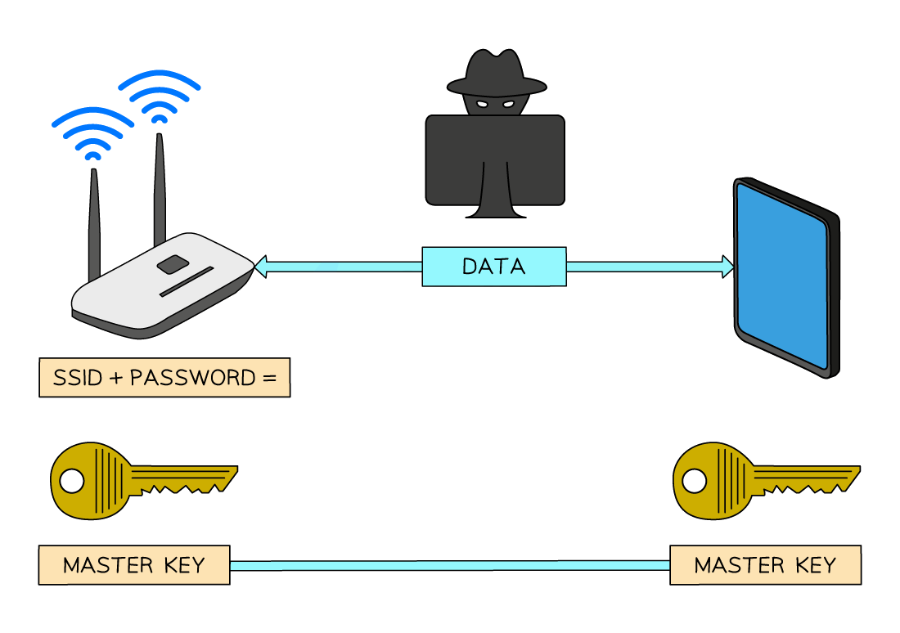
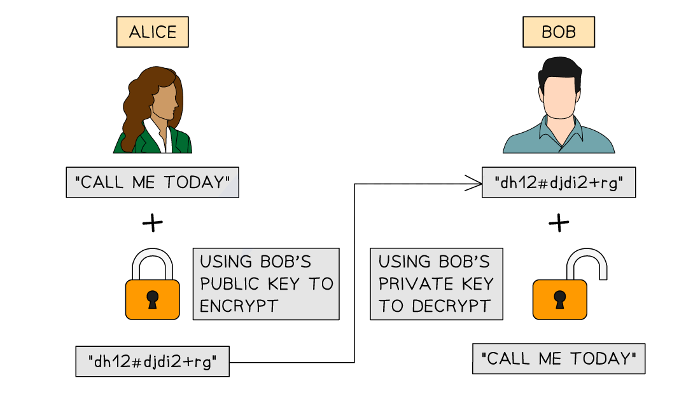

Encryption
How encryption works
What is encryption?
- Encryption is a method of scrambling data before being transmitted across a network
- Encryption helps to protect the contents from unauthorised access by making data meaningless
- While encryption is important on both wired and wireless networks, it’s even more critical on wireless networks due to the data being transmitted over radio waves, making it easy to intercept
How is wireless data encrypted?
- Wireless networks are identified by a ‘Service Set Identifier’ (SSID) which along with a password is used to create a ’ master key ‘
- When devices connect to the same wireless network using the SSID and password they are given a copy of the master key
- The master key is used to encrypt data into ’ cipher text ‘, before being transmitted
- The receiver uses the same master key to decrypt the cipher text back to ’ plain text ‘
- To guarantee the security of data, the master key is never transmitted. Without it, any intercepted data is rendered useless
- Wireless networks use dedicated protocols like WPA2 specifically designed for Wi-Fi security

How is wired data encrypted?
- Wired networks are encrypted in a very similar way to a wireless network, using a master key to encrypt data and the same key to decrypt data
- Encryption on a wired network differs slightly as it is often left to individual applications to decide how encryption is used, for example HTTPS
Symmetric & asymmetric encryption
How does symmetric encryption work?
- The sender uses a key to encrypt the data before transmission
- The receiver uses the same key to decrypt the data
- It’s usually faster, making it ideal for encrypting large amounts of data
- The significant downside is the challenge of securely sharing this key between the sender and receiver
- If a bad actor captures the key, they can decrypt all messages intercepted in transmission
 Structure of Symmetric Encryption
Structure of Symmetric Encryption
How does asymmetric encryption work?
- Asymmetric encryption uses two keys:
- a public key for encryption
- and a private key for decryption
- Receivers openly sharetheir public key
- Senders use this public key to encrypt the data
- The receiver’s private key is the only key that can decrypt the data and is kept locally on their side
- The public and private keys are created at the same time and are designed to work together in this way
- It is typically slower than symmetric encryption
- It is generally used for more secure and smaller data transactions, e.g. passwords, bank details

Structure of Asymmetric Encryption
Choosing an encryption type
- Symmetric encryption is fast but has key-sharing issues; asymmetric is slower but solves these issues.
- The choice should be made based on the situation’s needs: whether speed or security is more critical.
| Encryption Type |
Suitable For |
Reasons to choose |
| Symmetric |
Large files, databases |
- Fast and efficient for bulk data.
- The same person encrypts and decrypts, e.g. when backing up data. |
| Asymmetric |
Confidential/secret communications |
- Sharing highly secure data, e.g. passwords, government communications |
Quantum cryptography
What is quantum cryptograhy?
- Quantum cryptography uses quantum mechanics to securely transmit encryption keys
- Its main goal is to enable unbreakable communication by detecting any attempt to intercept or tamper with the key
- The most well-known method is:
- Quantum Key Distribution (QKD) – uses quantum particles (like photons) to share a secret key between two parties securely
Benefits of quantum cryptography
| Benefit |
Explanation |
| Unbreakable key transmission |
Uses quantum physics – measuring a quantum state disturbs it, so eavesdropping is detectable |
| Eavesdropper detection |
Any interception changes the quantum state of the key, alerting the users |
| Perfect forward secrecy |
Keys are used once and then discarded, reducing the impact of future key leaks |
| Stronger than classical encryption |
Not based on mathematical problems like factoring large primes, so it’s not vulnerable to advances in computing (e.g. quantum computers) |
Drawbacks of quantum cryptography
| Drawback |
Explanation |
| Expensive and complex |
Requires advanced technology, including specialised hardware like photon detectors and fibre-optic channels |
| Short distance limits |
Works best over short ranges (limited by current fibre-optic and signal loss issues) |
| Slow transmission speed |
QKD is typically slower than traditional key exchange methods |
| Still evolving |
Technology is new and not yet widely available or standardised |
| Only secures key exchange |
Quantum cryptography secures the key, but not the actual data encryption itself – traditional algorithms still needed |
Quiz
Quantum cryptography isn’t about encrypting the message – it’s about securing the key used in encryption (e.g. with QKD). Always mention this to show clear understanding.
Encryption is used to alter data into a form that makes it meaningless if intercepted.
Describe the purpose of asymmetric key cryptography.
Answer
- To provide better security [1 mark]
- … by using two different keys / a public key and a private key [1 mark]
- One of the keys is used to encrypt the message [1 mark]
- … the matching key is used to decrypt the message [1 mark]
Protocols
SSL/TLS
What is SSL?
- SSL (Secure Sockets Layer) is a security protocol used to encrypt data sent over the internet
- Helps to prevent eavesdropping, tampering, or man-in-the-middle attacks
- Commonly used for:
- Protecting websites
- Online payments
- Login credentials
- Creates a secure connection between a web server and a browser
What is TLS?
- TLS (Transport Layer Security) is the successor to SSL
- It performs the same functions but is more secure and efficient
- Modern websites use TLS, although people often still refer to it as “SSL”
- When you see HTTPS in the browser, it means TLS/SSL encryption is active
How SSL/TLS works with digital certificates
- When you visit a secure website (e.g.
https://), the server sends your browser its digital certificate
- The certificate contains:
- The server’s public key
- Information about the website and Certificate Authority (CA)
- A digital signature from the CA
- Your browser checks that the certificate is valid and trusted using the CA’s public key
- If trusted, a secure connection is established, often using a shared secret key (symmetric encryption) created during the handshake
Summary: What a digital certificate does
| Component |
Purpose |
| Public key |
Used by your browser to create secure communication |
| Website identity |
Shows who owns the key |
| Certificate Authority |
Signs the certificate to confirm it’s trustworthy |
| Browser validation |
Uses the CA’s public key to verify the certificate |
- TLS has replaced SSL — but both are encryption protocols used with digital certificates
- Always mention digital certificates when explaining how websites create secure connections
Digital certificates
What is a digital certificate?
- A digital certificate is an electronic file that confirms someone’s identity and proves that a public key belongs to them
- It is issued by a trusted third party called a Certificate Authority (CA)
- A digital certificate includes:
- The owner’s public key
- The owner’s identity details (e.g. name, email, company)
- The expiry date of the certificate
- The Certificate Authority’s digital signature
Hash function
- A hash function is a one-way algorithm that takes an input (e.g. a message) and produces a fixed-length output, called a hash value or message-digest
- Key features:
- The output is always the same length, regardless of input size
- It is one-way — you cannot reverse it to get the original input
- Even a small change in input produces a completely different output
- Commonly used in digital signatures and password storage
- Think of it as a fingerprint for data
Message-digest
- A message-digest is the output (the hash value) produced when a message is processed through a hash function
- It is:
- A fixed-length summary of the original message
- Unique to the message (ideally – collisions are rare)
- Used to check whether a message has been altered
- Think of it as the unique ID or checksum of a message
How is a digital certificate acquired?
- Leila wants to be able to sign documents digitally
- She generates a key pair – one private key and one public key
- Leila sends a Certificate Signing Request (CSR) to a Certificate Authority (CA)
- This includes her public key and identity details
- The CA verifies Leila’s identity using documents or other checks
- If approved, the CA digitally signs a certificate and sends it back to Leila
- This certificate contains Leila’s public key, identity, and the CA’s signature
How is a digital certificate used to produce a digital signature?
- Leila writes a message she wants to send to Jonas
- She applies a hash function to the message to create a message-digest
- Leila then encrypts the message-digest using her private key
- This becomes her digital signature
- She sends Jonas:
- The original message
- Her digital signature
- Her digital certificate
- Jonas:
- Uses Leila’s public key (from the certificate) to verify the digital signature
- Uses the CA’s public key to verify that the certificate is genuine and hasn’t been forged
Summary
| Step |
Purpose |
| Certificate issued by a CA |
Proves the public key belongs to the sender |
| Certificate includes public key |
Lets others verify digital signatures |
| CA’s digital signature on certificate |
Shows it was issued by a trusted third party |
| Public verifies sender and message |
Ensures authenticity and integrity of the message |
- The digital certificate proves ownership of a public key
- The digital signature proves a message came from the claimed sender and wasn’t altered
Don’t mix them up!
← Back to All Notes